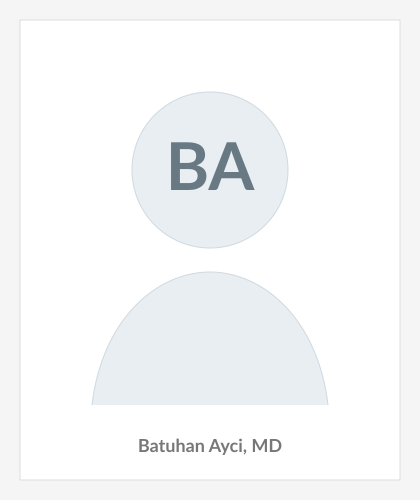
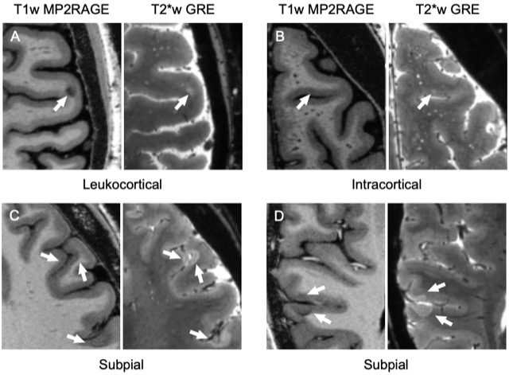
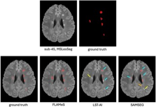
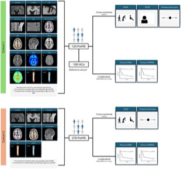
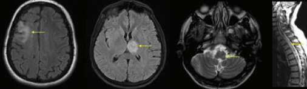

Batuhan AyciI am a postdoctoral fellow in the Department of Neurology at the Icahn School of Medicine at Mount Sinai, where I work in Beck's Lab with Erin Beck, MD, PhD. My research focuses on multiple sclerosis, neuroimmunology, and advanced MRI markers of inflammatory demyelinating disease. My current work uses 3T and 7T MRI to study cortical lesions, paramagnetic rim lesions, volumetrics, quantitative MRI metrics, and the natural history of radiologically isolated syndrome. I also collaborate on deep learning approaches for MS lesion segmentation and cortical lesion detection. I received my MD with high honor from Istanbul University-Cerrahpasa in 2024. Before joining Mount Sinai, I worked across neurology, neuroimmunology, and biomedical engineering settings in Turkey, Switzerland, and the United States. ORCID / Google Scholar / LinkedIn / Links |

Icahn School of Medicine at Mount Sinai |
News selected updates
|
Clinical Experience Visiting Medical Student Clerkship May 2024 Mayo Clinic, Department of Neurology, Rochester, Minnesota. Participated in inpatient and outpatient neurology care, patient histories, physical examinations, clinical documentation, and multidisciplinary discussions. Observership Mar 2024 – May 2024 NIH, NINDS Neuroimmunology Clinic, Bethesda, Maryland. Observed care for multiple sclerosis, progressive multifocal leukoencephalopathy, and HTLV-1 associated myelopathy. Volunteer Internship Dec 2022 – Sep 2024 Istanbul University-Cerrahpasa, Department of Neurology. Participated in MS and related disorders outpatient care, clinical meetings, and educational case discussions. |
Research Experience Postdoctoral Fellow Dec 2024 – Present Icahn School of Medicine at Mount Sinai, Department of Neurology, Beck's Lab. Supervisor: Erin Beck, MD, PhD.
Research Assistant Dec 2022 – Nov 2024 Istanbul University-Cerrahpasa, Department of Neurology. Supervisors: Ugur Uygunoglu, MD; Melih Tutuncu, MD; Aksel Siva, MD.
Summer Internship Jun 2023 – Aug 2023 University of Basel, Department of Biomedical Engineering. Supervisors: Cristina Granziera, MD, PhD; Alessandro Cagol, MD.
|
EducationMedical Doctor 2018 – 2024 Istanbul University-Cerrahpasa, Cerrahpasa School of Medicine, Istanbul, Turkey. GPA: 3.66/4.00. Awarded Medical Doctor degree with high honor. |
Research InterestsMy research interests are centered on clinical neuroimmunology and imaging biomarkers in multiple sclerosis. Specific areas include cortical demyelination, paramagnetic rim lesions, radiologically isolated syndrome, quantitative MRI, high-field MRI, automated lesion segmentation, and clinically meaningful computational imaging. |
Selected Publications |
 |
Cortical Lesions Form Predominantly in Early Multiple Sclerosis Ayci B, Dereskewicz E, dos Santos Silva J, Galasso J, Rust P, La Rosa F, Liu J, Reich DS, Sumowski JF, Beck ES medRxiv, 2026 First-author preprint on when cortical lesions form over the course of multiple sclerosis. |
 |
A Novel Convolutional Neural Network for Automated Multiple Sclerosis Brain Lesion Segmentation Dereskewicz E, La Rosa F, Dos Santos Silva J, Sizer E, Kohli A, Wynen M, Mullins WA, Maggi P, Levy S, Onyemeh K, Ayci B, Solomon AJ, Assländer J, Al-Louzi O, Reich DS, Sumowski J, Beck ES. Journal of Neuroimaging, 2025. DOI: 10.1111/jon.70085 Co-authored convolutional neural network for automated MS brain-lesion segmentation. |
 |
Assessing the Relative Importance of Imaging and Serum Biomarkers in Capturing Disability, Cognitive Impairment, and Clinical Progression in Multiple Sclerosis Cagol A, Benkert P, Schaedelin S, Ocampo-Pineda M, Montobbio N, Lu PJ, Ayci B, Wenger A, Shukur AA, Kaim K, Melie-Garcia L, Weigel M, Signori A, Calabrese P, Kappos L, Sormani MP, Kuhle J, Granziera C. Advanced Science, 2026. DOI: 10.1002/advs.202512946 Co-authored comparison of imaging versus serum biomarkers for MS disability, cognition, and progression. |
 |
Neurobehcet Syndrome Ayci B, Gulec B, Uygunoglu U, Siva A. In: Neuroimmunology. Turkish Neurological Society Publications, 2023 First-author Turkish-language book chapter on Neuro-Behçet syndrome. |
Selected Presentations
|
Service & Recognition
|
|
Source code adapted from Jon Barron's public academic website source code. |